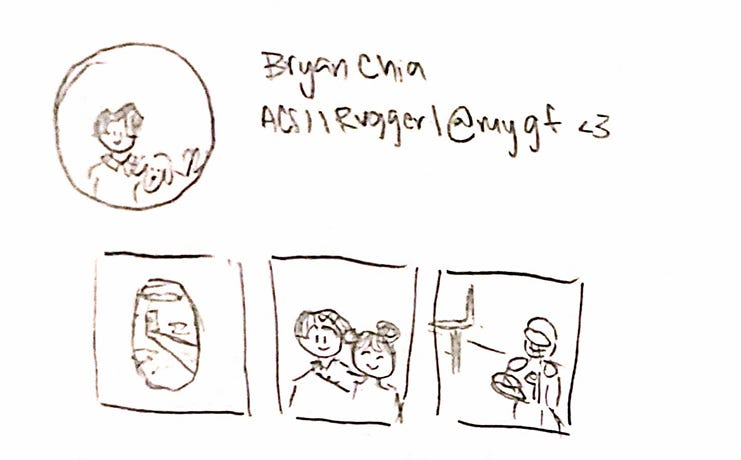
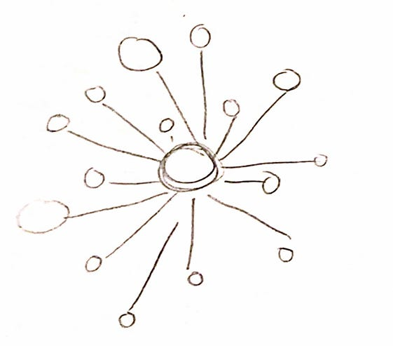
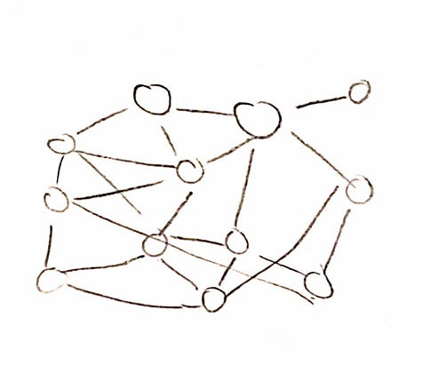

Against Telegram Friendship Channels
Modern telecommunication applications introduced the concept of non-physical outreach “on-demand” where anywhere, anytime – you can text, meme, and send funny videos.
Modern telecommunication applications introduced the concept of non-physical outreach “on-demand” where anywhere, anytime – you can text, meme, and send funny videos. Perhaps it was a cute bug, perhaps it was a hot take or an awkward encounter. Families, friends, strangers, family friends, a friend of a friend – our social networks seemed to exceed impossible bounds.
When you’ve got many friends and a big event happens, how do you manage this? Do you copy and paste the same message to each person in your friend group? Or do you selectively pick and choose who gets the message, and amongst them, who gets what version of the message? Or do you not do anything at all?
Traditionally, Facebook/Instagram used to be the channels one would use to “spread the word” to a large audience simultaneously. For example, your Instagram biography may offer a glimpse into the key details of your being:
“ACSI | NUS’26 | Rugger | @mygirlfriend”
And perhaps the profile picture features them holding a trophy, or a dog, or something.
Your posts could hint at the activities you partake in:

As compared to traditional text-based platforms, images as the main mode of communication allows for the curation of the visual self. Instagram’s introduction of stories/reels/lives enabled a shift from the static feed to a much more dynamic mode of self-representation. One can post unpolished images of their day, spontaneous and fleeting 24-hour stories matching the ephemeral moment actually experienced in real life. However, its medium results in its lack. Its public, pictorial nature does not allow for meandering and intimate conversations. The point of Instagram is to show rather than tell, to present rather than process. Its medium simply does not allow for authenticity at its fullest.
Now, back to the original question. So what does one do when you’ve experienced something big and have 40 people you’ll like to share it to? Perhaps within those 40 there exists a group chat of about 5-7 – maybe you can make multiple group chats that accounts for all 40? But not everyone in that 40 knows each other. One big group chat would be odd as, once again, not everyone knows each other and the only real link between all 40 are their ties to you!
Technology disrupts and technology (“)solves(“). Telegram, the messaging app of choice amongst (Singaporean university) students, has the option of “broadcast channels”. Originally used by organisations such as news media and brands to reach out to their expansive audiences, youths have repackaged it into “friendship channels”. These channels typically have comments and emoji reactions enabled so when the poster sends something out, each of their many friends can have a separate say. This results in a peculiar phenomenon where distinct conversations occur all at once in the same “comments section” and, while all of them are visible to all members of the broadcast, each strand remains independent of each other. It is neither one-way nor two-way, it’s a really weird in-between.

While ingenious, I can’t help but feel uneasy about it. This sort of “live” feed of a person’s day differs from traditional one-on-one chats or even one big massive group chat. There exists no intersubjectivity, no back-and-forths. It’s where information by the poster is imposed onto the audience.
I believe that a core tenant of friendships has been the personal bond that exists between two or more.

There exists a certain curatorial ethos to friendships. It’s not just about having different interests with different people (though that is part of it), it’s the deeper recognition that each friendship exists in its own unique relational space. With one friend I may talk about career anxieties, to another I may talk about my bagpacking plans. Yes, while there exists a shared vocabulary base of my “core” between all of them (say, my background and education history), no conversation or developed friendship between any of them overlap completely. What I share about a big experience would differ as well – I may emphasize gender to one or link it to a childhood memory to another. These aren’t “masks” but just different aspects of who I am that has been brought out, nurtured and developed by the unique individual friend I am conversing with.
Existing scholarship tends to focus on “context collapse” – the phenomenon where an unintended (and unaccounted for) audience encounters your posts meant for another group (for example, my professor sees me posting about holidaying during recess week). That concept does now work here as all members of a broadcast channel have been vetted and added personally by the poster. I find the term “context flattening” or “context homogenising” much more apt.
A broadcast channel fixes the poster to one version of themselves. There isn’t room for a responsive, iterative communication form. In a real conversation (online or in-person), what I say is shaped by who I am talking to, and their response shapes what I say next. One can have fun with this and send the same thing to two people and have the question be informed by two different perspectives. I can take the other perspective to the other friend, having them duke it out without each other knowing I was simply the intermediary.
The obvious counterargument is that these channels are simply efficient and while I understand this logic, I also think it impoverishes the meaning of what friendship means. If the point is information transfer (I started work at XXX, I am getting married!), alright, I see the point, but that is the job of LinkedIn and Instagram. Friendship has never been primarily about just information transfer, it’s about the joy of being known and recognised specifically. It’s why we share memes and flourish it with “literally us”. To share something on an individual basis is to invite them into an experience that recognises and acknowledges said specific relationship – it is an affirmation both to their intrinsic value and your own.
I am not arguing for a return to the pre-digital pigeon-mail mode of communication or suggesting that all mass social sharing is problematic. Each medium (Instagram posts and stories, Linkedin announcements, Twitter/X threads, etc.) serve their own function. I am simply against the efficiency argument when it comes to something deeply personal such as friendships. The extra, and often subconscious, considerations of “who would really like to hear about this and “how can this piece of information connect to our friendship” is a feature, not a bug (yada yada).
TLDR: I would much prefer not to start our meetup with: “Hey! I saw this on your channel!”